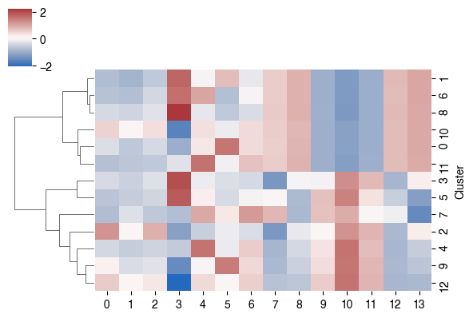
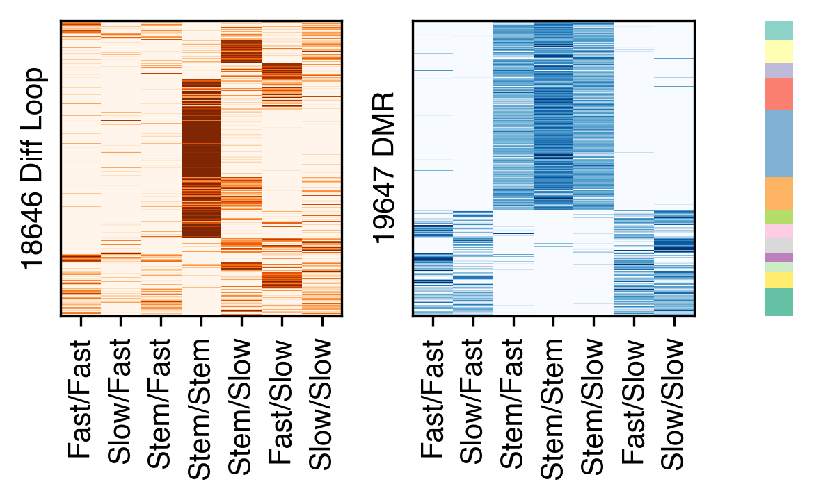
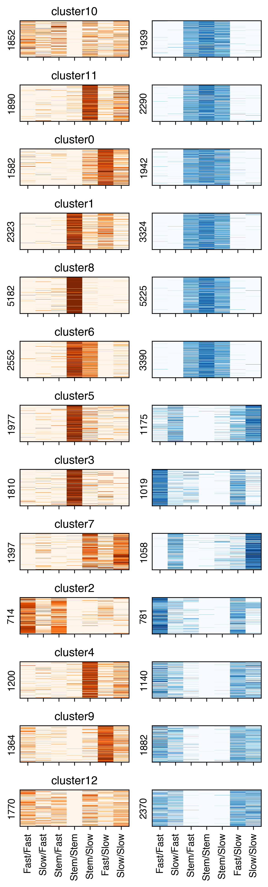
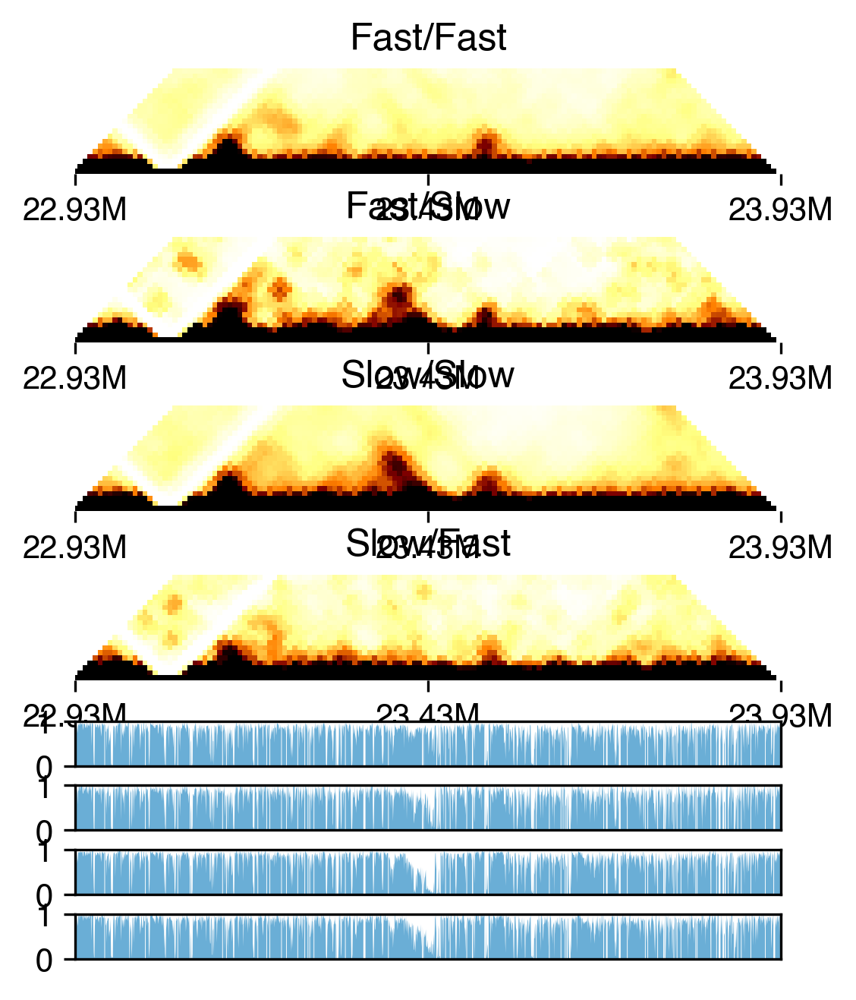
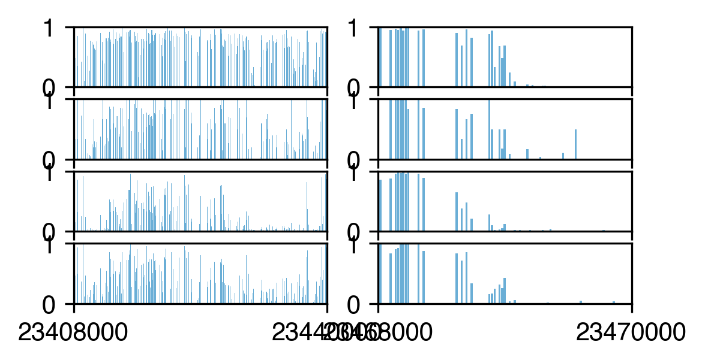

6. MusSkl diff 7group#
Part of the Fig. 6 chapter — see it for the panel-by-panel map. The first code cell sets ENTEX_ROOT and activates the no-overwrite guard (see the Reproduction guide). Outputs shown are the author’s original run.
📥 Required input files#
This notebook reads the following files (paths resolve from ENTEX_ROOT/REF_ROOT; the setup cell sets them). See the chapter’s inputs.md for RAW-vs-derived tags.
f'{outdir}/DMR_3group_{version}group.mcds'· mC matrix (mcds)f'{loopdir}merged_loop.hdf'· loop callsf'{loopdir}loop_Q.hdf'· loop callsf'{loopdir}loop_T.hdf'· loop callsf'{outdir}5kCG100k3C_embed.h5ad'· embedding h5adf'{outdir}hg38.main.10kbin.dmr.7group_{version}.txt'· DMRf'{REF_ROOT}/hg38/gencode/v30/gencode.v30.annotation.gene.flat.tsv.gz'· ref: gencodef'{cooldir}{ct}.Q.cool'· contacts (cool)'Mus-Skl/SklMus-mc_dmr'· DMR'Mus-Skl/Mus-Skl_DMR.mcds'· mC matrix (mcds)'Mus-Skl/cell_3971_DMR_8group_mCG.hdf'· DMR
# === Reproduction setup — edit ENTEX_ROOT / REF_ROOT for your machine ===
import os, sys
ENTEX_ROOT = os.environ.get('ENTEX_ROOT', '/large_storage/zhoulab/zhoujt/project/ENTEx')
REF_ROOT = os.environ.get('REF_ROOT', '/large_storage/zhoulab/ref')
BOOK_ROOT = os.environ.get('BOOK_ROOT', f'{ENTEX_ROOT}/analysis/HumanCellEpigenomeAtlas')
sys.path.insert(0, BOOK_ROOT)
os.chdir(f'{ENTEX_ROOT}/analysis') # original working directory
import repro_guard # no-overwrite guard (default: skip existing)
from glob import glob
import anndata
import matplotlib as mpl
import matplotlib.pyplot as plt
import matplotlib.patches as patches
import numpy as np
import pandas as pd
import scanpy as sc
import scanpy.external as sce
import seaborn as sns
import cooler
from ALLCools.mcds import RegionDS,MCDS
from ALLCools.clustering import *
from ALLCools.integration.seurat_class import SeuratIntegration
from ALLCools.plot import *
from sklearn.metrics import pairwise_distances, roc_auc_score
from sklearn.preprocessing import normalize
# mpl.use('agg')
mpl.style.use("default")
mpl.rcParams["pdf.fonttype"] = 42
mpl.rcParams["ps.fonttype"] = 42
mpl.rcParams["font.family"] = "sans-serif"
mpl.rcParams["font.sans-serif"] = "Helvetica"
import warnings
warnings.filterwarnings("ignore")
indir = f'{ENTEX_ROOT}/'
outdir = f'{indir}analysis/Mus-Skl/'
version = 'new'
dmrdir = f'{outdir}DMR_7group_{version}/'
loopdir = f'{outdir}diffloop_7group_{version}/'
# outdir = f'{ENTEX_ROOT}/analysis/pairwise_prediction/'
ct = 'Mus-Skl'
# def rename_cluster(xx):
# yy = xx.replace('-',' ').replace('c', 'C')
# yy = yy.replace('0', '-Stem').replace('1', '-Fast').replace('2', '-Slow')
# return yy
def rename_cluster(xx):
yy = xx.replace('-','/').replace('mc','').replace('3c','')
yy = yy.replace('0', 'Stem').replace('1', 'Fast').replace('2', 'Slow')
return yy
chrom_size_path = f'{REF_ROOT}/hg38/fasta/hg38.main.chrom.sizes'
chrom_sizes = cooler.read_chromsizes(chrom_size_path, all_names=True)
chrom_sizes = chrom_sizes.iloc[:22]
dmr_ds = RegionDS.open(dmrdir, region_dim='dmr')
dmr_ds
dmr = dmr_ds[['dmr_chrom', 'dmr_start', 'dmr_end', 'dmr_ndms']].to_pandas()
dmr[['dmr_start', 'dmr_end', 'dmr_ndms']] = dmr[['dmr_start', 'dmr_end', 'dmr_ndms']].astype(int)
dmr
seldmr = (dmr['dmr_ndms']>1) & (dmr['dmr_chrom'].isin(chrom_sizes.index))
dmr_ds = dmr_ds.sel({'dmr':dmr.index[seldmr]})
dmr_data = dmr_ds['dmr_da_frac'].to_pandas().fillna(1).T
dmr.loc[seldmr].reset_index().sort_values(['dmr_chrom', 'dmr_start'])[['dmr_chrom', 'dmr_start', 'dmr_end', 'dmr']].to_csv(f'{dmrdir}DMR.bed.gz', sep='\t', index=False, header=False)
seldmr = seldmr.index[seldmr]
allcpath = np.sort(glob(f'{indir}analysis/Mus-Skl/allc/*.CGN-Merge.allc.tsv.gz'))
allcpath = pd.Series(allcpath, index=[xx.split('/')[-1].split('.')[0] for xx in np.sort(allcpath)])
allcpath.to_csv(f'{ct}/allclist_{version}group.tsv', sep='\t', header=False, index=True)
mcds = MCDS.open(f'{outdir}/DMR_3group_{version}group.mcds', var_dim='DMR')
mcds['DMR_frac_da'] = mcds.sel({'count_type':'mc'})['DMR_da'] / mcds.sel({'count_type':'cov'})['DMR_da']
dmr_data = mcds['DMR_frac_da'].to_pandas().fillna(1).T
## overlap with 10kb bin
import os
cmd = f'bedtools intersect -loj -wa -wb -a {REF_ROOT}/hg38/fasta/hg38.main.10kbin.bed -b {dmrdir}DMR.bed.gz > {outdir}/hg38.main.10kbin.dmr.7group_{version}.txt'
os.system(cmd)
res = 10000
L2any diff loop#
loopall = pd.read_hdf(f'{loopdir}merged_loop.hdf', key='data')
loopq = pd.read_hdf(f'{loopdir}loop_Q.hdf', key='data')
loopt = pd.read_hdf(f'{loopdir}loop_T.hdf', key='data')
adata = anndata.read_h5ad(f'{outdir}5kCG100k3C_embed.h5ad')
nct = loopq.shape[1]
ncell = adata.shape[0]
print(ncell, nct)
from scipy.stats import f
from statsmodels.sandbox.stats.multicomp import multipletests as FDR
def stats2fdr(data):
pv = [f.sf(x, nct-1, ncell-nct) for x in data.values]
fdr = FDR(pv, 0.01, "fdr_bh")[1]
return fdr
from concurrent.futures import ProcessPoolExecutor, as_completed
from statsmodels.sandbox.stats.multicomp import multipletests as FDR
cpu = 3
with ProcessPoolExecutor(cpu) as executor:
futures = {}
for m in 'QET':
future = executor.submit(
stats2fdr,
data=loopall[f'{m}anova'],
)
futures[future] = m
for future in as_completed(futures):
m = futures[future]
loopall[f'{m}fdr'] = future.result()
# for m in 'QET':
# loopall[f'{m}fdr'] = stats2fdr(loopall[f'{m}anova'])
loopall.to_hdf(f'{loopdir}merged_loop.hdf', key='data')
from scipy.stats import norm, zscore
thres1 = norm.isf(0.025)
thres2 = norm.isf(0.15)
print(thres1, thres2)
fdrthres = 1e-1
# loopall = pd.read_hdf(f'{loopdir}merged_loop.hdf', key='data')
statfilter = (zscore(loopall['Qanova'])>thres2) & (zscore(loopall['Tanova'])>thres2)
fdrfilter = (loopall['Qfdr']<fdrthres) & (loopall['Efdr']<fdrthres) & (loopall['Tfdr']<fdrthres)
# selloop = statfilter & fdrfilter
selloop = fdrfilter
print(statfilter.sum(), fdrfilter.sum(), selloop.sum())
# cg = sns.clustermap(tmp, vmin=0, vmax=2, metric='cosine', figsize=(0.1,0.1))
# rorder = cg.dendrogram_row.reordered_ind.copy()
# selloop = selloop.index[selloop]
fig, axes = plt.subplots(1, 2, figsize=(4,2.5), dpi=300)
ax = axes[0]
tmp = zscore(loopq.loc[selloop, leg_3c], axis=1)
rorder, count, label3c = order_row(tmp, nc=3)
tmp = tmp.iloc[rorder]
ax.imshow(tmp, cmap='Oranges', aspect='auto',
interpolation='none', rasterized=True, vmin=0, vmax=2)
ax.set_xticks(np.arange(loopq.shape[1]))
ax.set_xticklabels(leg_3c.map(rename_cluster), rotation=90)
ax.set_ylabel(f'{selloop.sum()} Diff Loop')
ax.set_yticks(count.cumsum()-0.5)
ax.set_yticklabels(count.index)
ax = axes[1]
tmp = zscore(dmr_data.loc[:, leg_3c], axis=1)
rorder, count, labelcg = order_row(tmp, nc=4)
tmp = tmp.iloc[rorder]
ax.imshow(tmp, cmap='Blues_r', aspect='auto',
vmin=-2, vmax=0, interpolation='none', rasterized=True)
ax.set_xticks(np.arange(dmr_data.shape[1]))
ax.set_xticklabels(leg_3c.map(rename_cluster), rotation=90)
ax.set_ylabel(f'{seldmr.sum()} DMR')
ax.set_yticks(count.cumsum()-0.5)
ax.set_yticklabels(count.index)
fig.tight_layout()
fig.savefig(f'{outdir}plot/{ct}_mc3c_DMR_loop_7group_{version}_fdr_sepkmeans_heatmap.pdf', transparent=True)
print(dmr_data.shape, seldmr.sum())
diffloop = loopall.loc[selloop, [0,1,4]]
diffloop[[1, 4]] = diffloop[[1, 4]] // res
diffloop = diffloop.reset_index()
diffloop
data = pd.read_csv(f'{outdir}hg38.main.10kbin.dmr.7group_{version}.txt', sep='\t', header=None, index_col=None)
# data[6] = data[6].str.split('.').str[0]
data[3] = data[0] + '-' + (data[1] // res).astype(str)
bin2dmr = {xx:[] for xx in data[3].values}
data = data[data[7]!='.']
for xx,yy in data[[3,7]].values:
bin2dmr[xx].append(yy)
selloop = []
seldmr = []
for loop in diffloop[[0, 1, 4, 'index']].values:
xx = f'{loop[0]}-{loop[1]}'
yy = f'{loop[0]}-{loop[2]}'
zz = bin2dmr[xx] + bin2dmr[yy]
if len(zz)>0:
selloop.append(np.repeat([loop[3]], len(zz)))
seldmr.append(zz)
selloop = np.concatenate(selloop)
seldmr = np.concatenate(seldmr)
print(len(selloop), len(seldmr))
leg_3c = pd.Index(['mc1-3c1', 'mc2-3c1', 'mc0-3c1',
'mc0-3c0',
'mc0-3c2', 'mc1-3c2', 'mc2-3c2'])
leg_cg = pd.Index(['mc1-3c1', 'mc1-3c2', 'mc0-3c1',
'mc0-3c0',
'mc0-3c2', 'mc2-3c1', 'mc2-3c2'])
leg_share = pd.Index(['mc1-3c1', 'mc0-3c0', 'mc2-3c2'])
tmp3c = loopq.loc[selloop, leg_3c]
# tmp3c = zscore(tmp3c, axis=1)
tmpcg = dmr_data.loc[seldmr, leg_3c]
# tmpcg = zscore(tmpcg, axis=1)
# dmr_adata = anndata.AnnData(X=tmpcg)
# sc.pp.neighbors(dmr_adata, n_neighbors=25, use_rep='X')
# sc.tl.leiden(dmr_adata, resolution=0.05, random_state=0, flavor='igraph')
# count = dmr_adata.obs['leiden'].value_counts()
# selclust = count.index[count>100]
# print(len(selclust))
from sklearn.cluster import KMeans
def order_row(data, nc):
data = data.reset_index(drop=True)
# Perform KMeans clustering
kmeans = KMeans(n_clusters=nc, random_state=0, n_init=10)
clusters = kmeans.fit_predict(data)
# Create a new dataframe with cluster labels
cluster_df = pd.DataFrame({'Cluster': clusters}, index=data.index)
# Sort the data by cluster and plot the heatmap
merged_data = pd.concat([data, cluster_df], axis=1).groupby(by='Cluster').mean()
cg = sns.clustermap(merged_data, cmap='vlag', metric='cosine', figsize=(6,4), col_cluster=False)
rorder = cg.dendrogram_row.reordered_ind.copy()
# leg = merged_data.index[rorder]
leg = [10,11,0,1,8,6,5,3,7,2,4,9,12]
count = pd.Series(clusters).value_counts().loc[leg]
# sorted_data = pd.concat([data[clusters==i] for i in leg], axis=0)
rorder = np.concatenate([data.index[clusters==i] for i in leg])
return rorder, count, cluster_df
# cg = sns.clustermap(tmp, vmin=0, vmax=2, metric='cosine', figsize=(0.1,0.1))
# rorder = cg.dendrogram_row.reordered_ind.copy()
fig, axes = plt.subplots(1, 2, figsize=(4,2), dpi=300)
ax = axes[0]
tmp = zscore(loopq.loc[selloop, leg_3c], axis=1)
rorder, count, label3c = order_row(tmp, nc=3)
tmp = tmp.iloc[rorder]
ax.imshow(tmp, cmap='Oranges', aspect='auto',
interpolation='none', rasterized=True, vmin=0, vmax=2)
ax.set_xticks(np.arange(loopq.shape[1]))
ax.set_xticklabels(leg_3c.map(rename_cluster), rotation=90)
ax.set_ylabel(f'{np.unique(selloop).shape[0]} Diff Loop')
ax.set_yticks(count.cumsum()-0.5)
ax.set_yticklabels(count.index)
ax = axes[1]
tmp = zscore(dmr_data.loc[seldmr, leg_3c], axis=1)
rorder, count, labelcg = order_row(tmp, nc=4)
tmp = tmp.iloc[rorder]
ax.imshow(tmp, cmap='Blues_r', aspect='auto',
vmin=-2, vmax=0, interpolation='none', rasterized=True)
ax.set_xticks(np.arange(dmr_data.shape[1]))
ax.set_xticklabels(leg_3c.map(rename_cluster), rotation=90)
ax.set_ylabel(f'{np.unique(seldmr).shape[0]} DMR')
ax.set_yticks(count.cumsum()-0.5)
ax.set_yticklabels(count.index)
# fig.savefig(f'{outdir}plot/{ct}_mc3c_DMR_loop_3group_old_top_cghierar_heatmap.pdf', transparent=True)
# cg = sns.clustermap(tmp, vmin=0, vmax=2, metric='cosine', figsize=(0.1,0.1))
# rorder = cg.dendrogram_row.reordered_ind.copy()
fig, axes = plt.subplots(1, 2, figsize=(4,2.5), dpi=300)
ax = axes[0]
tmp = zscore(loopq.loc[selloop, leg_3c], axis=1)
rorder, count, label3c = order_row(tmp, nc=3)
tmp = tmp.iloc[rorder]
ax.imshow(tmp, cmap='Oranges', aspect='auto',
interpolation='none', rasterized=True, vmin=0, vmax=2)
ax.set_xticks(np.arange(loopq.shape[1]))
ax.set_xticklabels(leg_3c.map(rename_cluster), rotation=90)
ax.set_ylabel(f'{np.unique(selloop).shape[0]} Diff Loop')
ax.set_yticks(count.cumsum()-0.5)
ax.set_yticklabels(count.index)
ax = axes[1]
tmp = zscore(dmr_data.loc[seldmr, leg_3c], axis=1)
rorder, count, labelcg = order_row(tmp, nc=4)
tmp = tmp.iloc[rorder]
ax.imshow(tmp, cmap='Blues_r', aspect='auto',
vmin=-2, vmax=0, interpolation='none', rasterized=True)
ax.set_xticks(np.arange(dmr_data.shape[1]))
ax.set_xticklabels(leg_3c.map(rename_cluster), rotation=90)
ax.set_ylabel(f'{np.unique(seldmr).shape[0]} DMR')
ax.set_yticks(count.cumsum()-0.5)
ax.set_yticklabels(count.index)
fig.tight_layout()
fig.savefig(f'{outdir}plot/{ct}_mc3c_DMR_loop_7group_{version}_fdr_sepkmeans_heatmap.pdf', transparent=True)
dmr.loc[np.unique(seldmr)].sort_values(by=['dmr_chrom','dmr_start','dmr_end']).iloc[:,:3].to_csv(f'{ct}/dmr_oldiffloop.bed', sep='\t', header=False, index=False)
REGION_BED=f"{ENTEX_ROOT}/analysis/Mus-Skl/dmr_oldiffloop.bed"
GENOME_FASTA=f"{REF_ROOT}/hg38/fasta/hg38.fa"
CHROMSIZES=f"{REF_ROOT}/hg38/fasta/hg38.main.chrom.sizes"
DATABASE_PREFIX="dmr_oldiffloop_slop1kb"
SCRIPT_DIR="/home/zhoujt/software/create_cisTarget_databases"
${SCRIPT_DIR}/create_fasta_with_padded_bg_from_bed.sh \
${GENOME_FASTA} \
${CHROMSIZES} \
${REGION_BED} \
dmr_oldiffloop_slop1kb.fa \
1000 \
yes
export PATH=$PATH:~/software/
OUT_DIR=""${PWD}""
REF_DIR=f"{REF_ROOT}/aertslab_motif_colleciton"
CBDIR="${REF_DIR}/v10nr_clust_public/singletons"
FASTA_FILE="${OUT_DIR}/dmr_oldiffloop_slop1kb.fa"
MOTIF_LIST="${REF_DIR}/motifs.txt"
"${SCRIPT_DIR}/create_cistarget_motif_databases.py" \
-f ${FASTA_FILE} \
-M ${CBDIR} \
-m ${MOTIF_LIST} \
-o ${OUT_DIR}/${DATABASE_PREFIX} \
--bgpadding 1000 \
-t 36
region_set_folder: f"{ENTEX_ROOT}/analysis/Mus-Skl/dmr_oldiffloop_group"
ctx_db_fname: f"{ENTEX_ROOT}/analysis/Mus-Skl/dmr_oldiffloop_db/dmr_oldiffloop_slop1kb.regions_vs_motifs.rankings.feather"
dem_db_fname: f"{ENTEX_ROOT}/analysis/Mus-Skl/dmr_oldiffloop_db/dmr_oldiffloop_slop1kb.regions_vs_motifs.scores.feather"
path_to_motif_annotations: f"{REF_ROOT}/aertslab_motif_colleciton/v10nr_clust_public/snapshots/motifs-v10-nr.hgnc-m0.00001-o0.0.tbl"
species: "homo_sapiens"
annotation_version: "v10nr_clust"
motif_similarity_fdr: 0.001
orthologous_identity_threshold: 0.0
annotations_to_use: "Direct_annot Orthology_annot"
fraction_overlap_w_dem_database: 0.4
dem_max_bg_regions: 500
dem_balance_number_of_promoters: True
dem_promoter_space: 1_000
dem_adj_pval_thr: 0.05
dem_log2fc_thr: 1.0
dem_mean_fg_thr: 0.0
dem_motif_hit_thr: 3.0
fraction_overlap_w_ctx_database: 0.4
ctx_auc_threshold: 0.005
ctx_nes_threshold: 3.0
ctx_rank_threshold: 0.05
# output for motif enrichment results .hdf5
dem_result_fname: f"{ENTEX_ROOT}/analysis/Mus-Skl/dmr_oldiffloop_group/scplus/dem_results.hdf5"
ctx_result_fname: f"{ENTEX_ROOT}/analysis/Mus-Skl/dmr_oldiffloop_group/scplus/ctx_results.hdf5"
# output html for motif enrichment results .html
output_fname_dem_html: f"{ENTEX_ROOT}/analysis/Mus-Skl/dmr_oldiffloop_group/scplus/dem_results.html"
output_fname_ctx_html: f"{ENTEX_ROOT}/analysis/Mus-Skl/dmr_oldiffloop_group/scplus/ctx_results.html"
scenicplus grn_inference motif_enrichment_cistarget \
--region_set_folder f"{ENTEX_ROOT}/analysis/Mus-Skl/dmr_oldiffloop_group" \
--cistarget_db_fname f"{ENTEX_ROOT}/analysis/Mus-Skl/dmr_oldiffloop_db/dmr_oldiffloop_slop1kb.regions_vs_motifs.rankings.feather" \
--output_fname_cistarget_result f"{ENTEX_ROOT}/analysis/Mus-Skl/dmr_oldiffloop_scplus/ctx_results.hdf5" \
--temp_dir f"{ENTEX_ROOT}/analysis/Mus-Skl/tmp" \
--species "homo_sapiens" \
--fr_overlap_w_ctx_db 0.4 \
--auc_threshold 0.005 \
--nes_threshold 3.0 \
--rank_threshold 0.05 \
--path_to_motif_annotations f"{REF_ROOT}/aertslab_motif_colleciton/v10nr_clust_public/snapshots/motifs-v10-nr.hgnc-m0.00001-o0.0.tbl" \
--annotation_version "v10nr_clust" \
--motif_similarity_fdr 0.001 \
--orthologous_identity_threshold 0.0 \
--annotations_to_use "Direct_annot Orthology_annot" \
--write_html \
--output_fname_cistarget_html f"{ENTEX_ROOT}/analysis/Mus-Skl/dmr_oldiffloop_scplus/ctx_results.html" \
--n_cpu 36
count
f'{outdir}plot/'
nc = 13
group_palette = sns.color_palette('Set3', 12) + sns.color_palette('Set2', nc-12)
tmp = np.concatenate([zscore(loopq.loc[selloop, leg_3c].values, axis=1),
zscore(dmr_data.loc[seldmr, leg_3c].values, axis=1)], axis=1)
rorder, count, label = order_row(pd.DataFrame(tmp), nc=nc)
tmp3c = zscore(loopq.loc[selloop, leg_3c], axis=1)
tmpcg = zscore(dmr_data.loc[seldmr, leg_3c], axis=1)
fig, axes = plt.subplots(1, 3, figsize=(4,2.5), dpi=300, sharey='all',
gridspec_kw={'width_ratios': [10, 10, 1]})
ax = axes[0]
# ax.imshow(data.loc[dmr_gene_map.index].iloc[rorder_mc].iloc[:, corder_mc],
# cmap='Greens_r', aspect='auto', interpolation='none', rasterized=True)
ax.imshow(tmp3c.iloc[rorder], cmap='Oranges', aspect='auto',
interpolation='none', rasterized=True, vmin=0, vmax=2)
# sns.despine(ax=ax, left=True, bottom=True)
# ax.set_xticks(np.arange(data.shape[1]))
# ax.set_xticklabels(data.columns[corder], rotation=90)
ax.set_xticks(np.arange(loopq.shape[1]))
ax.set_xticklabels(leg_3c.map(rename_cluster), rotation=90)
ax.set_yticks([])
ax.set_ylabel(f'{np.unique(selloop).shape[0]} Diff Loop')
ax = axes[1]
ax.imshow(tmpcg.iloc[rorder], cmap='Blues_r', aspect='auto',
vmin=-2, vmax=0, interpolation='none', rasterized=True)
# sns.despine(ax=ax, left=True, bottom=True)
ax.set_xticks(np.arange(dmr_data.shape[1]))
ax.set_xticklabels(leg_3c.map(rename_cluster), rotation=90)
# selidx = np.arange(0, nrow, nrow//15)
# ax.tick_params(axis='y', right=True, left=False, labelright=True, labelleft=False)
ax.set_yticks([])
# ax.set_yticklabels(pd.Index(seldmr).map(ens2gene).values[selidx])
ax.set_ylabel(f'{np.unique(seldmr).shape[0]} DMR')
ax = axes[2]
offset = [0] + list(count.cumsum())
ax.axis('off')
for k in range(nc):
rect = patches.Rectangle((0, offset[k]), 1, offset[k+1]-offset[k], linewidth=0,
edgecolor='none', facecolor=group_palette[k])
ax.add_patch(rect)
fig.tight_layout()
fig.savefig(f'{outdir}plot/{ct}_mc3c_DMR_loop_7group_{version}_fdr_cgkmeans_heatmap.pdf', transparent=True)


fig, axes = plt.subplots(nc, 2, figsize=(4,nc), dpi=300, sharex='all', sharey='row')
for i in range(nc):
ax = axes[i,0]
selp = (label==count.index[i]).values[:,0]
# ax.imshow(data.loc[dmr_gene_map.index].iloc[rorder_mc].iloc[:, corder_mc],
# cmap='Greens_r', aspect='auto', interpolation='none', rasterized=True)
ax.imshow(tmp3c.values[selp], cmap='Oranges', aspect='auto',
interpolation='none', rasterized=True, vmin=0, vmax=2)
# sns.despine(ax=ax, left=True, bottom=True)
# ax.set_xticks(np.arange(data.shape[1]))
# ax.set_xticklabels(data.columns[corder], rotation=90)
ax.set_xticks(np.arange(loopq.shape[1]))
ax.set_xticklabels(leg_3c.map(rename_cluster), rotation=90)
ax.set_yticks([])
ax.set_ylabel(f'{np.unique(selloop[selp]).shape[0]}')
ax.set_title(f'cluster{count.index[i]}')
ax = axes[i,1]
ax.imshow(tmpcg.values[selp], cmap='Blues_r', aspect='auto',
vmin=-2, vmax=0, interpolation='none', rasterized=True)
# sns.despine(ax=ax, left=True, bottom=True)
ax.set_xticks(np.arange(dmr_data.shape[1]))
ax.set_xticklabels(leg_3c.map(rename_cluster), rotation=90)
# selidx = np.arange(0, nrow, nrow//15)
# ax.tick_params(axis='y', right=True, left=False, labelright=True, labelleft=False)
ax.set_yticks([])
# ax.set_yticklabels(pd.Index(seldmr).map(ens2gene).values[selidx])
ax.set_ylabel(f'{np.unique(seldmr[selp]).shape[0]}')
fig.tight_layout()
fig.savefig(f'{outdir}plot/{ct}_mc3c_DMR_loop_7group_{version}_fdr_cgkmeans_heatmap_percluster.pdf', transparent=True)
# count = pd.Series(label).value_counts().sort_index()
# ax.set_yticks(count.cumsum()-0.5)
# ax.set_yticklabels(count.index)

for i in range(nc):
g = count.index[i]
selp = (label==g).values[:,0]
tmpdmr = np.unique(seldmr[selp])
dmr.loc[tmpdmr].sort_values(by=['dmr_chrom','dmr_start','dmr_end']).iloc[:,:3].to_csv(f'{ct}/dmr_oldiffloop_group/cluster{g}.bed', sep='\t', header=False, index=False)
for i in range(nc):
g = count.index[i]
selp = (label==g).values[:,0]
tmploop = np.unique(selloop[selp])
loopall.loc[tmploop].sort_values(by=[0,3,1,4]).iloc[:,:6].to_csv(f'{ct}/diffloop_oldmr_group/cluster{g}.bedpe', sep='\t', header=False, index=False)
leg = pd.Index(['mc1-3c1', 'mc1-3c2', 'mc2-3c2', 'mc2-3c1'])
cooldir = f'{indir}analysis/Mus-Skl/cool_{version}/'
allcdir = f'{indir}analysis/Mus-Skl/allc_{version}/'
gene_meta = pd.read_csv(f'{REF_ROOT}/hg38/gencode/v30/gencode.v30.annotation.gene.flat.tsv.gz', sep='\t', header=0)
gene_meta['gene_id_idx'] = gene_meta['gene_id'].str.split('.').str[0]
# MYL3 MYL2 MYL11
# MYH1 MYH2 MYH7 MYHAS
gtmp = 'MYH7'
lslop, rslop = 500000, 500000
chrom, start, end, strand = gene_meta.loc[gene_meta['gene_name']==gtmp, ['chrom', 'start', 'end', 'strand']].iloc[0]
if strand=='+':
tss = start
else:
tss = end
ll, rr = (tss - lslop), (tss + rslop)
print(chrom, ll, rr)
resl = 10000
loopl, loopr = (ll//resl), (rr//resl)
print(loopl, loopr)
## Load cell type Q
import cooler
from scipy import ndimage as nd
dstall = []
for ct in leg:
cool = cooler.Cooler(f'{cooldir}{ct}.Q.cool')
Q = cool.matrix(balance=False, sparse=True).fetch(chrom).tocsr()
tmp = Q[loopl:loopr, loopl:loopr].toarray()
tmp = nd.rotate(tmp, 45, order=0, reshape=True, prefilter=False, cval=0)
dstall.append(tmp)
print(ct)
import pysam
from scipy.sparse import csr_matrix
def load_allc(ct, chrom, start, end):
global indir
allc_path = f'{allcdir}{ct}.CGN-Merge.allc.tsv.gz'
idx, data_mc, data_cov = [], [], []
with pysam.TabixFile(allc_path) as allc:
allc_lines = allc.fetch(chrom, start+1, end)
for line in allc_lines:
_, pos, _, context, mc, cov, *_ = line.split("\t")
pos, mc, cov = int(pos), int(mc), int(cov)
idx.append(pos-start-1)
data_mc.append(mc)
data_cov.append(cov)
return np.array([idx, data_mc, data_cov])
start = loopl * resl
end = loopr * resl
data_mc_row, data_mc_col, data_mc_data = [], [], []
data_cov_row, data_cov_col, data_cov_data = [], [], []
for i,ct in enumerate(leg):
idx, tmp_mc, tmp_cov = load_allc(ct, chrom, start, end)
posfilter = np.ones(len(idx)).astype(bool)
# for bed in rm_list:
# for xx,yy in bed[chrom]:
# posfilter[np.logical_and(idx>=xx, idx<=yy)] = False
# print(np.sum(posfilter)/len(posfilter))
# idx = idx[posfilter]
# tmp_mc = tmp_mc[posfilter]
# tmp_cov = tmp_cov[posfilter]
data_mc_row.extend(np.zeros(len(idx))+i)
data_mc_col.extend(idx)
data_mc_data.extend(tmp_mc)
data_cov_row.extend(np.zeros(len(idx))+i)
data_cov_col.extend(idx)
data_cov_data.extend(tmp_cov)
print(ct)
data_mc_cg = csr_matrix((data_mc_data, (data_mc_row, data_mc_col)), shape=[len(leg), end-start])
data_cov_cg = csr_matrix((data_cov_data, (data_cov_row, data_cov_col)), shape=[len(leg), end-start])
colors = {'CG':sns.color_palette('Blues',1), 'CH':sns.color_palette('Purples',1)}
print(gtmp)
resm = 500
fig, axes = plt.subplots(len(leg)*2, 1, figsize=(4, np.sum(np.repeat([2,0.6],len(leg)).tolist())/2),
gridspec_kw={'height_ratios': np.repeat([2,0.6],len(leg)).tolist()}, dpi=300)
for i in range(len(leg)):
ax = axes[i]
ax.set_title(leg.map(rename_cluster)[i])
ax.spines['right'].set_visible(False)
ax.spines['top'].set_visible(False)
ax.spines['bottom'].set_visible(False)
ax.spines['left'].set_visible(False)
img = ax.imshow(dstall[i], cmap='afmhot_r', vmin=0, vmax=0.02,
interpolation='none', rasterized=True)
h = len(dstall[i])
ax.set_ylim([0.5*h, 0.35*h])
ax.set_xlim([0, h])
ax.set_yticks([])
ax.set_yticklabels([])
# ax.scatter((tmpl[:, 0]+tmpl[:, 1])/np.sqrt(2), 0.5*h-(tmpl[:, 1]-tmpl[:, 0])/np.sqrt(2),
# alpha=0.1, s=10, marker='D', edgecolors='c', color='none')
ax.set_xlim([0, (loopr-loopl-1)*np.sqrt(2)])
ax.set_xticks(np.sqrt(2)*np.arange(0, loopr-loopl+1, 50))
ax.set_xticklabels([])
ax.set_xticklabels([f'{(xx+loopl)/100}M' for xx in np.arange(0, loopr-loopl+1, 50)])
ax = axes[len(leg)+i]
mc_tmp = data_mc_cg[i].toarray()[0]
cov_tmp = data_cov_cg[i].toarray()[0]
tmp = mc_tmp.reshape((-1, resm)).sum(axis=1) / cov_tmp.reshape((-1, resm)).sum(axis=1)
x = np.arange(len(tmp))
nbins = tmp.shape[0]
ax.set_xlim([0, nbins])
ax.set_xticks([])
ax.set_ylim([0, 1])
ax.set_yticks([0, 1])
ax.fill_between(x, tmp, 0, where=tmp >= 0, facecolor=colors['CG'], interpolate=True)
# ax = axes[len(leg)*2+i]
# mc_tmp = data_mc_ch[i].toarray()[0]
# cov_tmp = data_cov_ch[i].toarray()[0]
# tmp = mc_tmp.reshape((-1, resm)).sum(axis=1) / cov_tmp.reshape((-1, resm)).sum(axis=1)
# x = np.arange(len(tmp))
# nbins = tmp.shape[0]
# ax.set_xlim([0, nbins])
# ax.set_xticks([])
# ax.set_ylim([0.005, 0.015])
# ax.set_yticks([0.005, 0.015])
# ax.fill_between(x, tmp, 0, where=tmp >= 0, facecolor=colors['CH'], interpolate=True)
# fig.tight_layout()
fig.savefig(f'Mus-Skl/Mus-Skl_fastslow_browser_{gtmp}_{version}.pdf', transparent=True)

def load_allc(ct, chrom, start, end):
global indir
allc_path = f'{allcdir}{ct}.CGN-Merge.allc.tsv.gz'
idx, data_mc, data_cov = [], [], []
with pysam.TabixFile(allc_path) as allc:
allc_lines = allc.fetch(chrom, start+1, end)
for line in allc_lines:
_, pos, _, context, mc, cov, *_ = line.split("\t")
# if context[1] in 'GN':
# continue
pos, mc, cov = int(pos), int(mc), int(cov)
idx.append(pos-start-1)
data_mc.append(mc)
data_cov.append(cov)
return np.array([idx, data_mc, data_cov])
def load_multi_allc(chrom, start, end):
global leg
data_mc_row, data_mc_col, data_mc_data = [], [], []
data_cov_row, data_cov_col, data_cov_data = [], [], []
for i,ct in enumerate(leg):
idx, tmp_mc, tmp_cov = load_allc(ct, chrom, start, end)
posfilter = np.ones(len(idx)).astype(bool)
data_mc_row.extend(np.zeros(len(idx))+i)
data_mc_col.extend(idx)
data_mc_data.extend(tmp_mc)
data_cov_row.extend(np.zeros(len(idx))+i)
data_cov_col.extend(idx)
data_cov_data.extend(tmp_cov)
print(ct)
data_mc_cg = csr_matrix((data_mc_data, (data_mc_row, data_mc_col)), shape=[len(leg), end-start])
data_cov_cg = csr_matrix((data_cov_data, (data_cov_row, data_cov_col)), shape=[len(leg), end-start])
return data_mc_cg, data_cov_cg
region_list = [['chr14', 23408000, 23440000],
['chr14', 23468000, 23470000]]
fig, axes = plt.subplots(len(leg), len(region_list), figsize=(2*len(region_list), 2), sharex='col', dpi=300)
for k, (chrom, start, end) in enumerate(region_list):
data_mc_cg, data_cov_cg = load_multi_allc(chrom, start, end)
nbins = 500
resm = max((end - start) // nbins, 20)
for i in range(len(leg)):
ax = axes[i, k]
mc_tmp = data_mc_cg[i].toarray()[0][:(resm*nbins)]
cov_tmp = data_cov_cg[i].toarray()[0][:(resm*nbins)]
tmp = mc_tmp.reshape((-1, resm)).sum(axis=1) / cov_tmp.reshape((-1, resm)).sum(axis=1)
nbins = tmp.shape[0]
tmp[np.isnan(tmp)] = 0
x = np.arange(len(tmp))
ax.set_xlim([0, nbins])
ax.set_xticks([])
ax.set_ylim([0, 1])
ax.set_yticks([0, 1])
x = x[tmp>0]
tmp = tmp[tmp>0]
ax.bar(x, tmp, color=colors['CG'])
# ax.fill_between(x, tmp, 0, where=tmp >= 0, facecolor=colors['CG'], interpolate=False)
ax.set_xticks([0, nbins])
ax.set_xticklabels([start, start+resm*nbins])
# fig.tight_layout()
fig.savefig(f'Mus-Skl/Mus-Skl_fastslow_browser_{gtmp}_mczoomin_{version}.pdf', transparent=True)

fig, axes = plt.subplots(nc, 2, figsize=(4,nc), dpi=300, sharex='all', sharey='row')
for i in range(nc):
ax = axes[i,0]
selp = (label==count.index[i]).values[:,0]
cg = sns.clustermap(tmp3c.values[selp], vmin=0, vmax=2, metric='cosine', figsize=(0.1,0.1))
rorder = cg.dendrogram_row.reordered_ind.copy()
# ax.imshow(data.loc[dmr_gene_map.index].iloc[rorder_mc].iloc[:, corder_mc],
# cmap='Greens_r', aspect='auto', interpolation='none', rasterized=True)
ax.imshow(tmp3c.values[selp][rorder], cmap='Oranges', aspect='auto',
interpolation='none', rasterized=True, vmin=0, vmax=2)
# sns.despine(ax=ax, left=True, bottom=True)
# ax.set_xticks(np.arange(data.shape[1]))
# ax.set_xticklabels(data.columns[corder], rotation=90)
ax.set_xticks(np.arange(loopq.shape[1]))
ax.set_xticklabels(leg_3c.map(rename_cluster), rotation=90)
ax.set_yticks([])
ax.set_ylabel(f'{np.unique(selloop[selp]).shape[0]}')
ax.set_title(f'cluster{count.index[i]}')
ax = axes[i,1]
ax.imshow(tmpcg.values[selp][rorder], cmap='Blues_r', aspect='auto',
vmin=-2, vmax=0, interpolation='none', rasterized=True)
# sns.despine(ax=ax, left=True, bottom=True)
ax.set_xticks(np.arange(dmr_data.shape[1]))
ax.set_xticklabels(leg_3c.map(rename_cluster), rotation=90)
# selidx = np.arange(0, nrow, nrow//15)
# ax.tick_params(axis='y', right=True, left=False, labelright=True, labelleft=False)
ax.set_yticks([])
# ax.set_yticklabels(pd.Index(seldmr).map(ens2gene).values[selidx])
ax.set_ylabel(f'{np.unique(seldmr[selp]).shape[0]}')
fig.tight_layout()
# count = pd.Series(label).value_counts().sort_index()
# ax.set_yticks(count.cumsum()-0.5)
# ax.set_yticklabels(count.index)
from scipy.cluster.hierarchy import linkage, fcluster
Z = linkage(tmpcg, method='average', metric='cosine')
nc = 12
label = fcluster(Z, t=nc, criterion='maxclust')
count = pd.Series(label).value_counts()
selclust = count.index[count>100]
# label = dmr_adata.obs['leiden'].values
nc = len(selclust)
nrow = selloop.shape[0]
print(nrow)
fig, axes = plt.subplots(nc, 2, figsize=(4,nc), dpi=300, sharex='col', sharey='row')
for i in range(nc):
selp = (label==selclust[i])
cg = sns.clustermap(tmp3c.values[selp], vmin=0, vmax=2, metric='cosine', figsize=(0.1,0.1))
rorder = cg.dendrogram_row.reordered_ind.copy()
ax = axes[i,0]
# ax.imshow(data.loc[dmr_gene_map.index].iloc[rorder_mc].iloc[:, corder_mc],
# cmap='Greens_r', aspect='auto', interpolation='none', rasterized=True)
ax.imshow(tmp3c.values[selp][rorder], cmap='Oranges', aspect='auto',
interpolation='none', rasterized=True, vmin=0, vmax=2)
# sns.despine(ax=ax, left=True, bottom=True)
# ax.set_xticks(np.arange(data.shape[1]))
# ax.set_xticklabels(data.columns[corder], rotation=90)
ax.set_xticks(np.arange(loopq.shape[1]))
ax.set_xticklabels(leg_cg.map(rename_cluster), rotation=90)
ax.set_yticks([])
ax.set_ylabel(f'{np.unique(selloop[selp]).shape[0]}')
ax = axes[i,1]
ax.imshow(tmpcg.values[selp][rorder], cmap='Greens_r', aspect='auto',
vmin=-2, vmax=0, interpolation='none', rasterized=True)
# sns.despine(ax=ax, left=True, bottom=True)
ax.set_xticks(np.arange(dmr_data.shape[1]))
ax.set_xticklabels(leg_cg.map(rename_cluster), rotation=90)
# selidx = np.arange(0, nrow, nrow//15)
# ax.tick_params(axis='y', right=True, left=False, labelright=True, labelleft=False)
ax.set_yticks([])
# ax.set_yticklabels(pd.Index(seldmr).map(ens2gene).values[selidx])
ax.set_ylabel(f'{np.unique(seldmr[selp]).shape[0]}')
axes[0,0].set_title('Diff Loop Contact', fontsize=10)
axes[0,1].set_title('DMR mCG', fontsize=10)
fig.tight_layout()
fig.savefig(f'{ct}/{ct}_mc3c_DMR_loop_heatmap_cgcluster.pdf', transparent=True)
tmpcg = tmpcg[leg_cg]
tmp3c = tmp3c[leg_cg]
import cooler
chrom_size_path = '/large_experiments/zhoulab/ref/hg38/fasta/hg38.main.chrom.sizes'
chrom_sizes = cooler.read_chromsizes(chrom_size_path, all_names=True)
chrom_sizes = chrom_sizes.iloc[:22]
from ALLCools.mcds import RegionDS
dmr_ds = RegionDS.open('Mus-Skl/SklMus-mc_dmr', region_dim='dmr')
dmr_ds
dmr = dmr_ds[['dmr_chrom', 'dmr_start', 'dmr_end', 'dmr_ndms']].to_pandas()
dmr[['dmr_start', 'dmr_end', 'dmr_ndms']] = dmr[['dmr_start', 'dmr_end', 'dmr_ndms']].astype(int)
dmr
seldmr = (dmr['dmr_ndms']>1) & (dmr['dmr_chrom'].isin(chrom_sizes.index))
dmr_ds = dmr_ds.sel({'dmr':dmr.index[seldmr]})
data = dmr_ds['dmr_da_frac'].to_pandas().fillna(1).T
dmr.loc[seldmr].reset_index()[['dmr_chrom', 'dmr_start', 'dmr_end', 'dmr']].to_csv('Mus-Skl/mC_DMR.bed.gz', sep='\t', index=False, header=False)
global_cg = adata.obs.groupby('leiden_init_mc')['mCGFrac'].mean()
leiden_group_mc = [[0],[3,5,8,10,11,13,15,16],[1,2,4,6,7,9,12,14]]
order_idx = list(global_cg.loc[map(lambda i:f'c{i}', leiden_group_mc[1])].sort_values().index)[::-1] + ['c0'] + list(global_cg.loc[map(lambda i:f'c{i}', leiden_group_mc[2])].sort_values().index)
order_idx
order_idx = ['c13', 'c5', 'c8', 'c10', 'c11', 'c16', 'c3', 'c15',
'c0',
'c9', 'c12', 'c4', 'c6', 'c2', 'c7', 'c14', 'c1']
# np.random.seed(0)
# sel = np.random.choice(np.arange(data.shape[0]), 2000, False)
# sns.clustermap(data.iloc[sel][order_idx], cmap='Greens_r', metric='cosine', col_cluster=False)
# from scipy.cluster.hierarchy import linkage, fcluster
# Z = linkage(data, method='average', metric='cosine')
data = data[order_idx]
dmr_adata = anndata.AnnData(X=data)
sc.pp.neighbors(dmr_adata, n_neighbors=25, use_rep='X')
sc.tl.leiden(dmr_adata, resolution=0.5, random_state=0, flavor='igraph')
count = dmr_adata.obs['leiden'].value_counts()
selclust = count.index[count>100]
print(len(selclust))
# ncol = 4
# nrow = (len(selclust) - 1) // ncol + 1
# fig, axes = plt.subplots(nrow, ncol, figsize=(3*ncol, 2.5*nrow), dpi=300, sharex='all')
# for i,xx in enumerate(selclust):
# tmp = data.loc[dmr_adata.obs['leiden']==xx]
# ax = axes.flatten()[i]
# ax.imshow(tmp, cmap='Greens_r', aspect='auto')
# ax.set_xticks(np.arange(tmp.shape[1]))
# ax.set_xticklabels(order_idx, rotation=90)
# ax.set_yticks([])
# ax.set_ylabel(f'{tmp.shape[0]} DMRs')
# ax.set_title(f'DMR cluster{xx}')
# for ax in axes.flatten()[len(selclust):]:
# ax.axis('off')
# ncol = 4
# nrow = (len(selclust) - 1) // ncol + 1
# fig, axes = plt.subplots(nrow, ncol, figsize=(3*ncol, 2.5*nrow), dpi=300, sharex='all')
# for i,xx in enumerate(selclust):
# tmp = data.loc[dmr_adata.obs['leiden']==xx]
# ax = axes.flatten()[i]
# ax.imshow(tmp, cmap='Greens_r', aspect='auto')
# ax.set_xticks(np.arange(tmp.shape[1]))
# ax.set_xticklabels(order_idx, rotation=90)
# ax.set_yticks([])
# ax.set_ylabel(f'{tmp.shape[0]} DMRs')
# ax.set_title(f'DMR cluster{xx}')
# for ax in axes.flatten()[len(selclust):]:
# ax.axis('off')
order_dmrgroup = np.array([4,0,2,7,6,3,1]).astype(str)
from ALLCools.mcds import MCDS
mcds = MCDS.open('Mus-Skl/Mus-Skl_DMR.mcds', var_dim='DMR')
mcds
mcds = mcds.assign_coords({'DMR_chrom': ('DMR', mcds.coords['DMR_chrom'].data),
'DMR_start': ('DMR', mcds.coords['DMR_start'].data),
'DMR_end': ('DMR', mcds.coords['DMR_end'].data),
})
mcds
bin_df = mcds[['DMR_chrom', 'DMR_start', 'DMR_end']].to_pandas()
bin_df['DMR_cluster'] = dmr_adata.obs['leiden'].astype(str)
mc = mcds.sel({'count_type':'mc'})['DMR_da'].to_pandas()
cov = mcds.sel({'count_type':'cov'})['DMR_da'].to_pandas()
bin_df = bin_df.loc[mc.columns]
mc = mc.T.groupby(bin_df['DMR_cluster']).sum()
cov = cov.T.groupby(bin_df['DMR_cluster']).sum()
from ALLCools.mcds.utilities import calculate_posterior_mc_frac
mcg = calculate_posterior_mc_frac(mc.T.values, cov.T.values, normalize_per_cell=False)
mcg = pd.DataFrame(mcg, index=mc.columns, columns=mc.index)
mcg.columns = mcg.columns.astype(str)
mcg.to_hdf('Mus-Skl/cell_3971_DMR_8group_mCG.hdf', key='data')
mcg = pd.read_hdf('Mus-Skl/cell_3971_DMR_8group_mCG.hdf', key='data')
selc = (adata.obs['leiden_group_mc']!='mc0')
data = normalize(adata.obsm[f'5kCG100k3C_u{npc_cg}pc{npc_3c}'], axis=1)
label = adata.obs.loc[selc, 'leiden_group_mc'].astype(str)
from sklearn.linear_model import LogisticRegression
clf = LogisticRegression(class_weight='balanced')
clf.fit(data[selc], label)
prob = clf.predict_proba(data)
prob = pd.DataFrame(prob, columns=['mc1','mc2'], index=adata.obs.index)
prob['diff'] = np.abs(prob['mc1'] - prob['mc2'])
# fig, axes = plt.subplots(1, 3, figsize=(12,3), dpi=300)
# tmp = adata_mc.obs.copy()
# for i,xx in enumerate(prob.columns):
# ax = axes[i]
# vmin = [0.6, 0.6, 0.0][i]
# vmax = [1.0, 1.0, 0.8][i]
# _ = continuous_scatter(data=tmp,
# ax=ax,
# coord_base=coord_base,
# hue=prob[xx],
# s=ds,
# labelsize=12,
# max_points=None,
# scatter_kws={'rasterized':True},
# hue_norm=[vmin, vmax],
# )
adata_mc.uns['iroot'] = adata.obs.reset_index().loc[((prob['diff']<0.1) & (adata.obs['leiden_group_3c']=='3c0')).values]['mCGFrac'].sort_values().index[0]
root = adata.obs.index[adata_mc.uns['iroot']]
sc.pp.neighbors(adata_mc, n_neighbors=25, use_rep=f'5kCG_u{npc_cg}_seuratL2')
sc.tl.diffmap(adata_mc, n_comps=npc_cg)
sc.pp.neighbors(adata_mc, n_neighbors=25, use_rep='X_diffmap')
sc.tl.dpt(adata_mc, n_dcs=npc_cg)
adata.obs['dpt_pseudotime_mc'] = adata_mc.obs['dpt_pseudotime'].copy()
adata.uns['iroot'] = adata_mc.uns['iroot']
adata.uns['root'] = root
adata.write_h5ad('Mus-Skl/5kCG100k3C_embed.h5ad')
# fig, ax = plt.subplots(figsize=(4,3), dpi=300)
# tmp = adata_mc.obs.copy()
# _ = continuous_scatter(data=tmp,
# ax=ax,
# coord_base=coord_base,
# hue='dpt_pseudotime',
# s=ds,
# labelsize=12,
# max_points=None,
# scatter_kws={'rasterized':True},
# # hue_norm=[vmin, vmax],
# )
# fig, ax = plt.subplots(figsize=(3,2), dpi=300)
# sns.histplot(tmp, bins=100, ax=ax)
order_cell = np.concatenate([adata.obs.loc[prob['mc1']>0.55, 'dpt_pseudotime_mc'].sort_values().index[::-1],
adata.obs.index[(prob['diff']<0.1) & (adata.obs['leiden_group_3c']=='3c0')],
adata.obs.loc[prob['mc2']>0.55, 'dpt_pseudotime_mc'].sort_values().index])
order_cell
adata.obs['dpt_pseudotime_mc'] = adata_mc.obs['dpt_pseudotime'].copy()
order_cell = np.concatenate([adata.obs.loc[(prob['mc1']>0.5) & (adata.obs.index!=root), 'dpt_pseudotime_mc'].sort_values().index[::-1],
[adata.uns['root']],
adata.obs.loc[(prob['mc2']>0.5) & (adata.obs.index!=root), 'dpt_pseudotime_mc'].sort_values().index])
order_cell
order_cell = order_cell[np.isin(order_cell, mcg.index)]
# fig, axes = plt.subplots(3, 1, gridspec_kw={'height_ratios': [10, 1, 1]}, figsize=(6,3), sharex='all', dpi=300)
# ax = axes[0]
# ax.imshow(mcg.loc[order_cell, order_dmrgroup].T, cmap='Greens_r', aspect='auto', interpolation='none', rasterized=True)
# ax.set_yticks(np.arange(len(order_dmrgroup)))
# ax.set_yticklabels(map(lambda i:f'DMR Group{i}', order_dmrgroup), fontsize=8)
# ax.set_xticks([])
# ax.set_title(f'{mcg.shape[0]} cells', fontsize=10)
# tmp = adata.obs.loc[order_cell, 'mCGFrac']
# vmin, vmax = np.percentile(tmp, [1,99])
# print(vmin, vmax)
# ax = axes[1]
# ax.imshow(tmp.values[None, :], aspect='auto', interpolation='none', cmap='Greens_r', vmin=0.68, vmax=0.78, rasterized=True)
# ax.axis('off')
# ax.set_title('Global mCG/CG', fontsize=10)
# tmp = adata.obs.loc[order_cell, 'dpt_pseudotime_mc']
# vmin, vmax = np.percentile(tmp, [1,99])
# print(vmin, vmax)
# ax = axes[2]
# ax.imshow(tmp.values[None, :], aspect='auto', interpolation='none', cmap='viridis', vmin=0, vmax=0.85, rasterized=True)
# ax.axis('off')
# ax.set_title('Pseudotime', fontsize=10)
# plt.tight_layout()